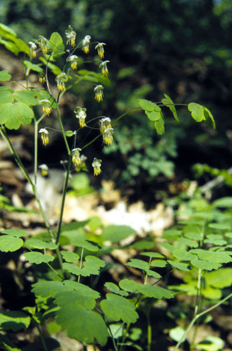
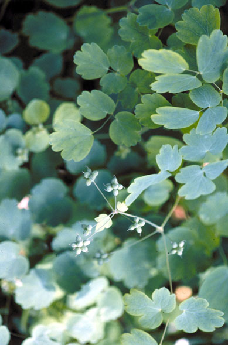
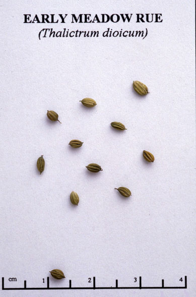

Thalictrum dioicum
Family: Ranunculaceae
Early Meadow Rue
Swink/Wilhelm #7


FLOWERING: Mid-April to May
SEED TIMING: Early to Mid-June
HABITAT: Rich, dry woodlands
DIAGNOSTIC FEATURES: Greenish yellow to mauve airy panicles are held above compound leaves with many divisions. Dioecious (male and female flowers grow on separate plants), so that not all plants will set seed. Male plant has greenish yellow blossoms which hang down like tassels. Female flowers are inconspicuous.
TO PICK: Clusters of green seeds are held in airy panicles. The seeds fall off easily when rubbed between thumb and fingers.